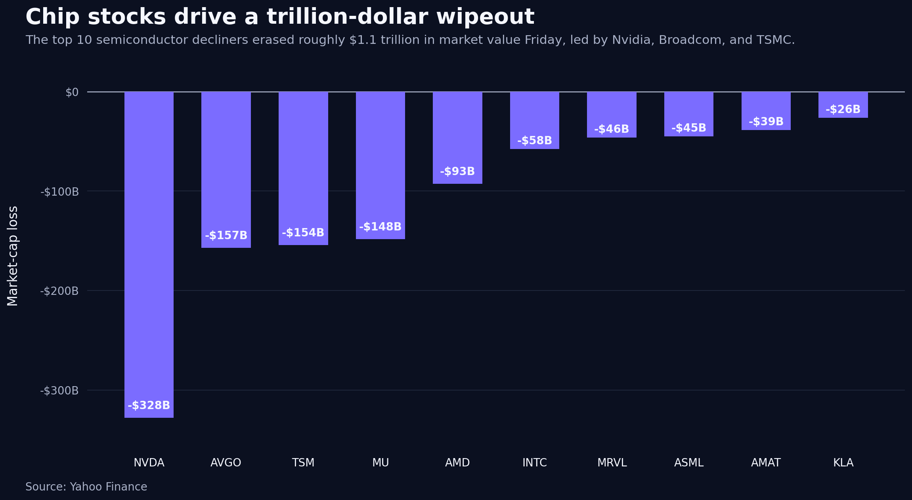
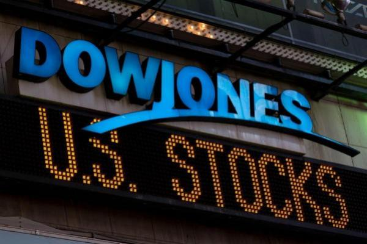
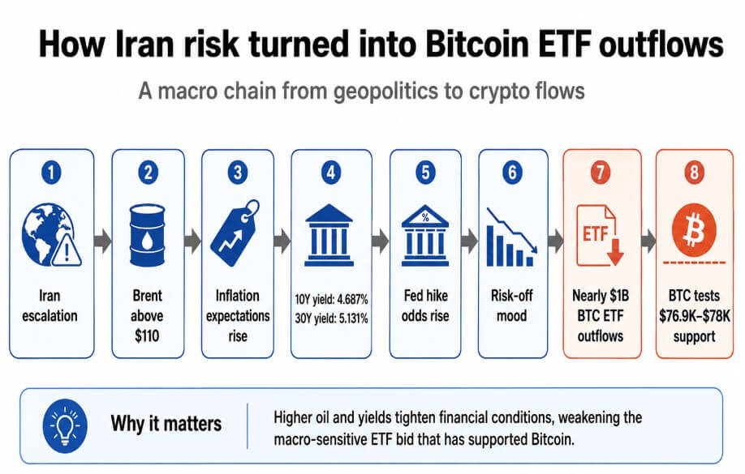
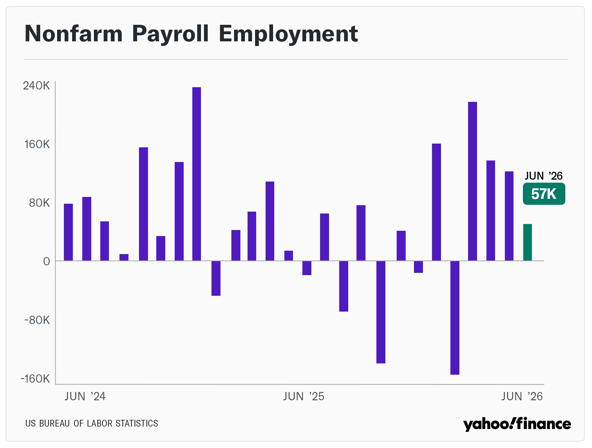

- A 4-day holiday week that split the tape. SPX +1.75% to 7,483.24. DIA +1.96%, printing an all-time high close of 52,900.07 Thursday. NDX +0.72%. SOXX minus 4.00% on the week but minus 11.6% from Tuesday peak to Thursday close. The index moved sideways while dispersion under the surface widened out.
- Quarter-end rebalancing was the single biggest capital-flow event of the week. JPM tagged the expected equity selling at approximately $165B (US pensions $55B, GPIF $60B, Norges Bank $40B, SNB $25B). The buying rotated into names that had underperformed. AAPL +8.75%, MSFT +4.70%, META +5.93%, GOOGL +6.67% were funded by tops in the semis leaders.
- June options expiration cleared roughly $8.3T of open interest, the largest quad-witching print on record per Paralia Trading Desk. Dealer gamma reset from long to short. SPX has traded below the 7,450 gamma-flip line since June 23. Vol-control funds sold approximately $10.8B of equity over 10 sessions, largest single-day landing on the Monday the flip line broke.
- Thursday NFP printed 57k versus 115k consensus. Unemployment 4.3%. Yet the 10Y closed the week at 4.49%, up 12bp WoW. 30Y +13bp to 4.99%. A soft labor print with long-end selling is unusual. The curve is pricing supply and term premium, not the Fed reaction function.
- VIX 18.41 to 16.15 (minus 12.28%). Realized dispersion did the work volatility did not. SOXX one-week realized ran approximately 3 standard deviations against last Friday’s implied. The vol surface still has not repriced dealer negative gamma above the flip.
The Week's Dominant Narrative
- Quarter-end mechanics dictated the flow. The $165B rebalance estimate was the largest quarterly equity sell in over a year (per JPM via Paralia). Selling concentrated in the names with the biggest Q2 gains (semis) and rotated into laggards (defensives, AAPL, MSFT). That is why Dow printed a record while SOXX collapsed in the same week.
- Dealer gamma has been negative above 7,450 for 8 sessions. Kurt Altrichter’s gamma report flagged the flip broken on June 23. Below the flip, dealers sell into rallies and buy into weakness, which amplifies both directions. The SOXX Wed-Thu air-pocket lines up with the gamma regime, not just news flow.

- Concentration remains the biggest structural risk. Scott Rubner (Citadel Securities) notes the top-10 SPX names now account for approximately 40% of the index, up roughly 10% since June 2023 and 13% since June 2020. When those names rotate, the index masks the move underneath. Equal-weight SPX gained about 1.5% on the week while cap-weight moved less (per LSEG).
- Systematic flow was on the sell side into quarter-end. CTAs printed short in six of the last seven sessions per Altrichter. Combined systematic positioning score collapsed to approximately minus 1.3 sigma (below the bearish line), down from plus 2 sigma in mid-May. CTAs had bought roughly $170B of global equities MTD per Paralia, but "impulse looks spent."
- Dow ATH was a rotation print, not a broad advance. Thursday close 52,900.07 (+594.83). WMT +2.78%, COST +2.92%, KO +3.51%, PG +2.70%. Defensives and consumer names caught the flow. Same session: SOX minus 5.4%, NVDA minus 1.39%, AVGO minus 2.41%, INTC minus 5.25%, MRVL minus 9.84%.
What Volatility Markets Priced
- VIX 16.15 close is misleading. Index vol compressed while single-name dispersion widened. SOXX realized ran multiples of implied, MRVL delivered a two-day 17.7% move against a much lower implied vol coming in. Anyone short semis premium into quarter-end got hit.
- Dealer negative gamma above 7,450 is the market-structure fact of the week. Altrichter marks vol-control fund selling at $10.8B over 10 sessions. Combined with negative gamma, both directions amplify. The Wed-Thu SOXX air-pocket and Thursday’s Dow ATH both fit that regime. Positive news reaches full extension; negative news reaches full extension the other way.
- Breadth held even as leaders broke. Per Altrichter, 64.5% of SPX trades above its 200-day (up from 60.4% last week). This is the split behind Dow ATH: the median stock is fine, the mega-cap semis are the ones being sold. Dispersion, not direction, is the trade.
- Skew reset in tech. MRVL, AMD, AVGO put skew widened from Tuesday to Thursday as the crash extended. NVDA held better (minus 1.39% Thu, +1.20% WoW) because it did not have the same MTD gain to rebalance out of. The rotation is inside the AI trade, not across it.

Cross Asset Signals
- The curve steepened against the payroll print. 10Y +12bp WoW to 4.49%, 30Y +13bp to 4.99%. A soft NFP (57k vs 115k, unemployment 4.3%) that lifts long-end yields is a supply concern, not a growth concern. Long-end selling into the July refunding window is the read. This is not a cut-trade signal.
- DXY 100.86 (minus 0.49). Dollar softened marginally on the soft NFP. Gold caught the symmetric bid: GLD +1.20% to 378.13. Neither move was directional enough to signal a regime shift. The dollar is holding above 100 despite a weak jobs print, which tells you the front end is not pricing dovishness.
- Small caps and Dow did not agree. IWM minus 0.75% while DIA +1.96%. Dow ATH was mega-cap defensives, not broad small-cap participation. This is a narrow-breadth advance dressed as a record close. The tell is IWM under-performing DIA by 271bp in a rally week.
- Oil traded quietly through the week. No major geopolitical channel driving. The absence of an energy story let the equity structural themes do the work uninterrupted. That will not always be the case in H2.
- BTC held mid-$60Ks with structural weakness underneath. Glassnode: underwater supply crossed 10.83M BTC versus 9.22M in profit, first crossover this drawdown. Long-term holder supply hit a record 16.3M BTC. Exchange reserves at 2.21M BTC, a 7-year low. Old hands are accumulating while ETFs bleed.

Structural Fragilities
- The $8.3T June expiration cleared record dealer gamma. That is the largest quad-witching print on record. The market entered July with a much thinner dealer book, hence the amplified moves. Until dealers rebuild long gamma, both directions will run further than fundamentals justify. Watch for accumulation off July expiration.
- Top-10 SPX at approximately 40% of index. A 10% weight increase in 3 years, 13% in 5 years (Rubner/Citadel). When those names rotate, the index masks the underlying dispersion. This week showed the mechanism clearly: SOXX minus 4% while SPX +1.75% because the buying rotated into mega-cap laggards.
- Curve steepening on a soft NFP is a warning. The bond market did not price a cut on 57k payrolls. That means either the print is dismissed (revision expected) or the long end is signaling something the front end cannot see. Term premium reset ahead of Treasury refunding is the leading candidate. Watch the July 3-week bill and 30Y auctions.

- Systematic positioning is now underweight equities. CTAs short 6 of 7 sessions. Combined positioning at minus 1.3 sigma (vs +2 sigma mid-May). Vol-control $10.8B out over 10 days. If macro data cooperates in July (cool CPI, orderly ISM), the reflex is a systematic re-lever, which would be a slower but broader tape than late June.
- BTC ownership crossover is a late-cycle signal. When underwater supply exceeds supply in profit, drawdowns historically last months, not weeks (per Glassnode). LT holders accumulating record 16.3M BTC while ETF flows print $4.5B June outflows is the classic diamond-hand versus tourist money split. The financialization channel is bleeding; the on-chain base is thickening.
- AI capex debate is back in the price. The chip crash Wed-Thu was not driven by a single catalyst. Rotation into defensives and out of the biggest Q2 winners was the mechanism. Underneath: the market is asking whether hyperscaler capex growth (Oracle, MSFT, GOOGL, META, AMZN) is sustainable or already in the numbers. Q2 prints in late July will settle the debate.
Our Trades This Week
Our activity this week centered on navigating the significant dispersion regime and quarter-end rebalancing mechanics. We focused on capturing volatility within AI-related names and positioning around institutional flows to capitalize on the rapid sectoral rotation.
- META Butterfly: We deployed butterfly spreads on META to capitalize on the rotation into mega-cap laggards, taking advantage of the inflow into names that had underperformed during the initial quarter.
- AMD Butterfly: As semiconductor stocks crashed following Tuesday's peak, we utilized butterfly spreads to manage exposure and capture premium dispersion amidst the rapid, news-driven price moves in the sector.
- CRDO Hedge: We executed put spreads ahead of the market closure to manage downside risk, maintaining a defensive posture in an environment where dealer gamma remains sensitive to further rotation.
What We Are Watching Next
- July expiration and dealer gamma rebuild. The July 18 monthly expiry is the next big flow event. If dealers rebuild long gamma above 7,450, the amplified regime unwinds. If not, expect more session-level dispersion into Q2 earnings.
- Q2 hyperscaler capex reads. MSFT (late July), GOOGL, META, AMZN prints. The market wants to see whether Oracle’s Q4 capex revision (50B to 55.7B) is a one-off or a template. If MSFT/GOOGL mark up capex plans similarly, the AI-infrastructure balance sheet story reprices further.
- CPI on July 15. After May’s 4.2% YoY headline (energy-driven), June is where the disinflation gradient in services either holds or breaks. Curve steepening this week suggests the market is nervous. A hot core would push 10Y through 4.55%.
- July 30-31 FOMC. Warsh’s second meeting. With NFP at 57k and CPI still to come, this is where the market either gets the hawkish continuation the curve is pricing, or gets a signal that soft data has changed the reaction function. Front end is priced for patience; long end is not.
- Treasury refunding cadence. Long-end supply into a soft-data environment. Watch the July auction tail, especially 20Y and 30Y. Any weak auction cover ratio validates the term-premium reset story and pushes yields further.
- BTC $58K support. Underwater cohort crossover historically preceded month-long drawdowns. If $58K breaks, next cluster is $52-54K. If it holds, LT holder accumulation eventually stabilizes the market at a higher base.
- Concentration measurement. If the top-10 SPX weight compresses below 40% in July, the market is broadening. If it climbs back above 40%, the underlying dispersion regime persists. Equal-weight SPX vs cap-weight SPX is the cleanest tell.